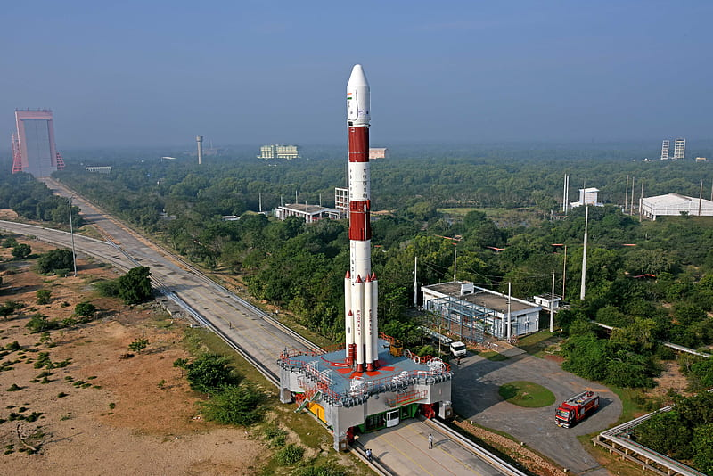
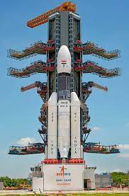
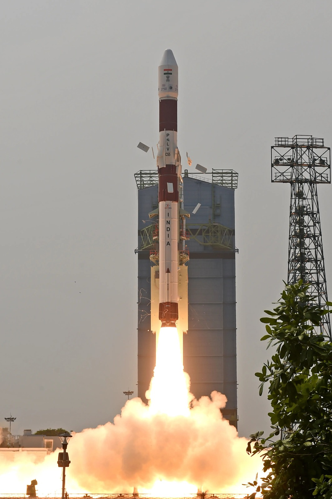
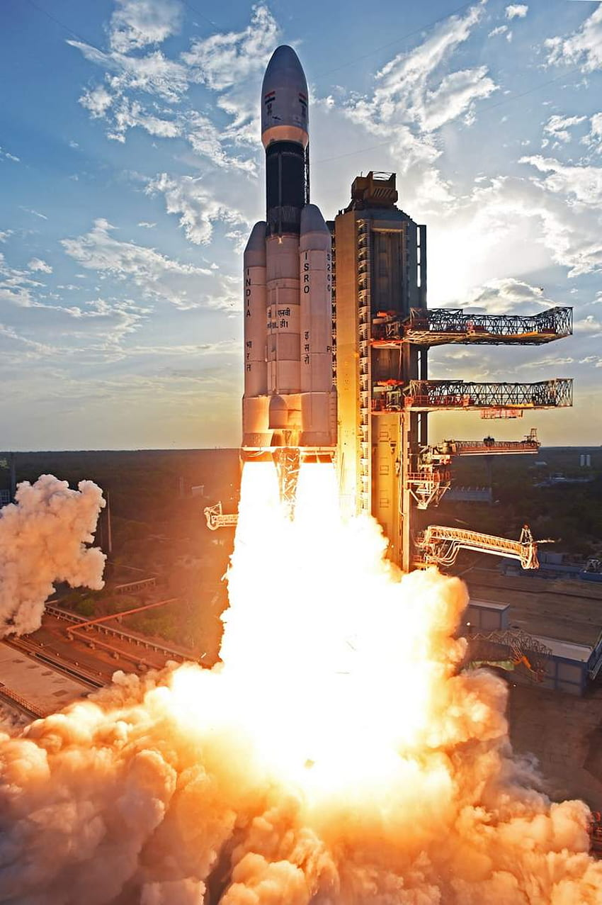
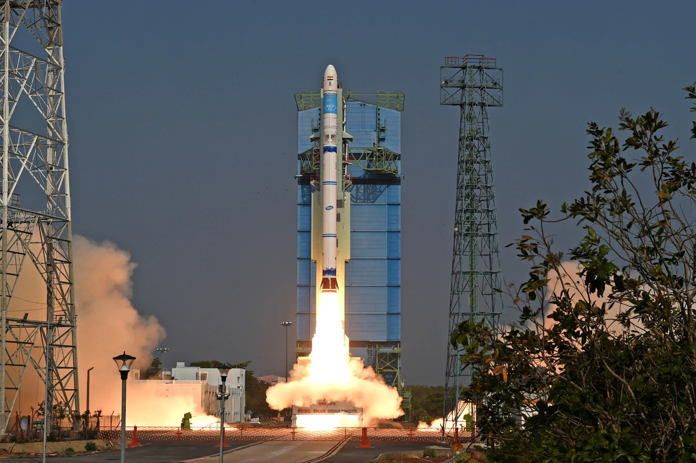

|
The Indian Space Research Organisation (ISRO) has a rich history of significant achievements in space exploration and technology development. Here's a brief overview of ISRO's history: 1. Early Years:->1962:The idea of a national space agency in India was first.->1969: ISRO was founded by Dr. Vikram Sarabhai, an eminent scientist and visionary, under the Department of Atomic Energy. |

|
2. Key Milestones:->1975: ISRO's first satellite, "Aryabhata," was launched, marking India's entry into space technology.->1980s: ISRO developed its first indigenous satellite launch vehicle, the Satellite Launch Vehicle (SLV-3), and successfully placed satellites in orbit. ->1983: The Rohini series of sounding rockets were launched, marking a significant step in India's space research. ->1990s: India launched the Polar Satellite Launch Vehicle (PSLV) and developed the Geosynchronous Satellite Launch Vehicle (GSLV) for placing satellites in different orbits. 3. Notable Missions and Achievements:->Chandrayaan-1 (2008):* ISRO's first mission to the Moon, which helped discover water molecules on the lunar surface.->Mangalyaan (Mars Orbiter Mission, 2013):* India's first interplanetary mission to Mars, making India the first Asian country to reach Martian orbit and at a remarkably low cost. ->Chandrayaan-2 (2019):* A more ambitious lunar mission aimed to explore the moon's south pole and conduct various experiments. 4. Recent Developments:->2020s: ISRO continued to advance with successful satellite launches, working on plans for human spaceflight (Gaganyaan), and expanding its capabilities in satellite technology, including communication, remote sensing, and navigation systems. ISRO has consistently showcased innovation, cost-effectiveness, and a commitment to space research, making significant strides in space technology and contributing to the world of space exploration |
Satellite Launch Vehicle (SLV):SLV was India's first experimental satellite launch vehicle, and it successfully launched the Rohini satellite, India's first satellite, into orbit on July 18, 1980.It has taken approximately seven years to realise the vehicle from start. The solid motor case for first and second stage are fabricated from 15 CDV6 steel sheets and third and fourth stages from fibre reinforced plastic |
 |
|  |
Augmented Satellite Launch Vehicle (ASLV):ASLV was developed to enhance the payload capacity compared to the SLV. It was used for launching a series of satellites in the 1980s and 1990s, including the SROSS series for remote sensing. |
Polar Satellite Launch Vehicle (PSLV):The PSLV is one of ISRO's most versatile and successful launch vehicles. It is capable of launching satellites into polar orbits and sun-synchronous orbits. PSLV has an impressive track record for launching satellites for both domestic and international customers. |
 |
|  |
Geosynchronous Satellite Launch Vehicle (GSLV):GSLV is designed to launch heavier payloads into geosynchronous transfer orbit (GTO). It has been used for launching communication satellites and has several variants, including GSLV Mk I, Mk II, and GSLV Mk III (LVM-3), which is also known as the GSLV Mk III or LVM-3. |
Small Satellite Launch Vehicle (SSLV):ISRO is developing the SSLV, a dedicated small satellite launch vehicle to provide cost-effective launch options for small payloads. The SSLV is designed to cater to the growing demand for launching small satellites into orbit. |
 |